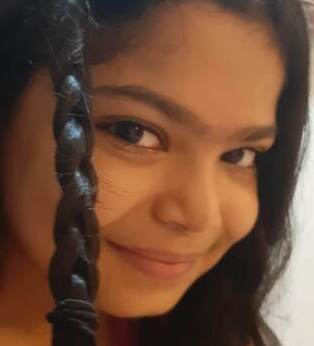
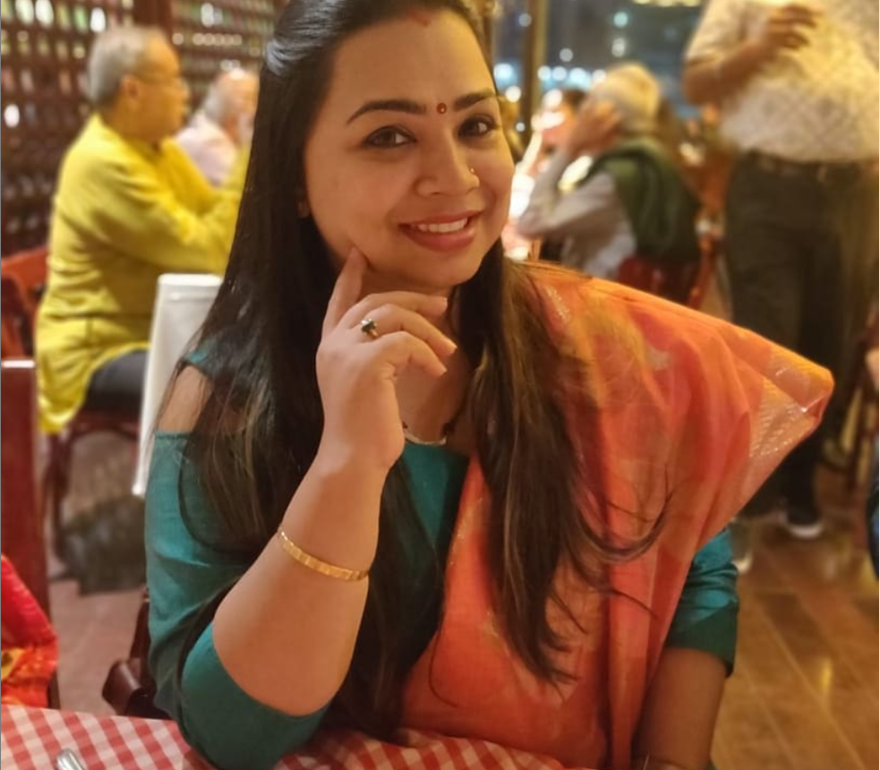
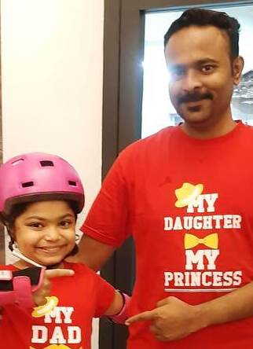
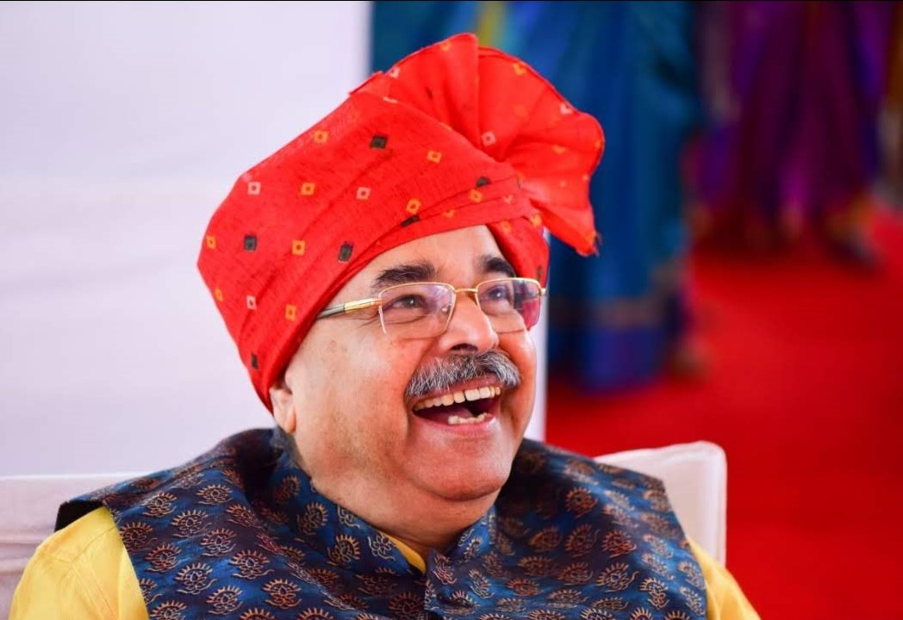
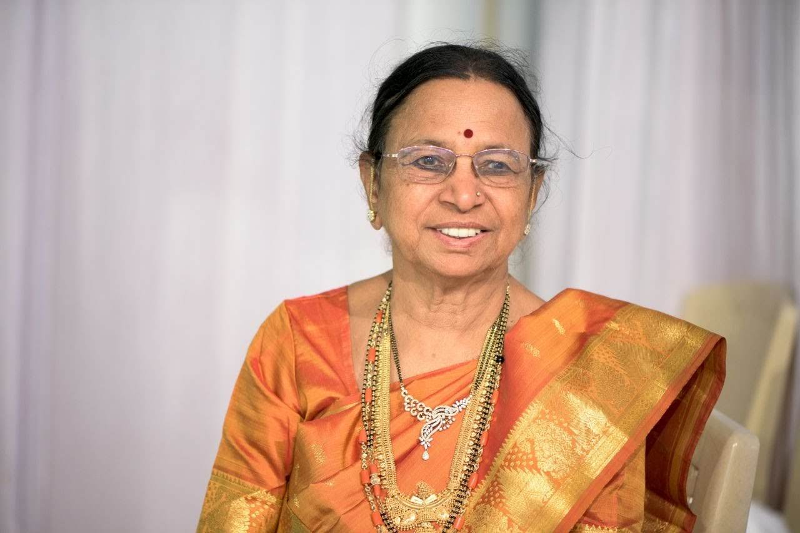
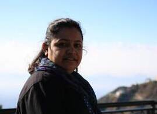
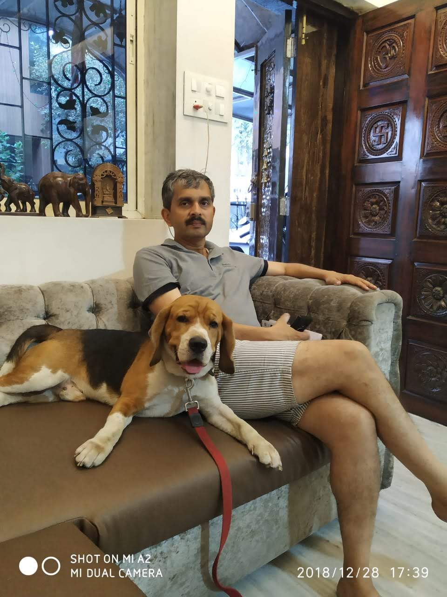
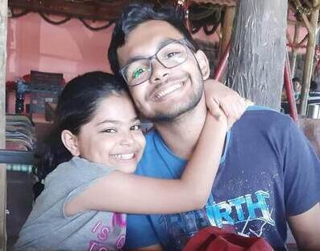

NIDHI
My name is Nidhi , I am 12 and i love reading , swimming , travels , adventuure ,etc. I do dancing , singing , coding , brainy and bharatnatyam. I have a group called the ANT group with means A-Anikka N-Nidhi T-threnesh , these 2 are me everything. In all my cousins i really love my sister Krisha and my brother Amey. He also is a very nice guy but is very rude and mean to me and my sisters but, i still love him. The most important people in my life are my grandparents. everyone is not lucky to be with thier grandparents. I am very lucky to have them in my life.
MY MOM- SAMPADA
My mom is Sampada, she loves baking and help my dad and grandpa at office. She even is the secretary of INNERWHEEL CLUB OF LADIES who help poor and needful people by filling up their stomach. My moms best friend is our family friend Sheela pacchi. My moms brother Veeru maama is a politician so she is lucky to sit in posh cars 🤣🤣
MY DAD- ANANTH
My dad is ananth , he loves watching tv and eating food . He runs the company with my grandpa . His favourite person is my grandmother brother Acchu maam , he literally talks to hime more than he talks to me. My father is a mechanical engineer that is what my brother is also studying . he does not like to go out anywhere he likes his cosy bed. In the whole wide world my dad is only sacred of his grandmother Shashikala Mammama (that means grandmother is kokani).
MY GRANDFATHER-UMESH
My grandfathers name is Iruvile Umesh Pai inshort you can call him = I.U.Pai . He is the founder and the main person of our factory . His fathers name was kogana pai and i call him coconut ajja (ajja means grandfather in konkani) . My grandfather loves to take up my studies . He is always and happy man and everyone love him in our family. He is also a qualified lawyer but, I dont understand being a lawyer he is running a bussiness , isnt it a little confusing.
MY GRANDMOTHER- KRISHNABAI
My grandmothers name is krinabai pai, her mothers name is lilavavtibai and fathers is padurang . Actually if you see my grandparents are related to each other . I cant understand how cousins could marry that time. Well leave this my grandmother is a scienctist and helps me in bio , chemistry and physics. She loves gardening and she also runs our second and third bussiness of btm and filing objects.
MY AUNTY-NAINA

MY UNCLE-KRISHNA

MY BROTHER-AMEY

LAST BUT NOT LEAST, MY DOG-BUZZO

My dogs name is Buzzo . He is the most sweetest and cutest character i have ever seen on this planet . He loves to eat alot and is very lazy at times. Basically he is a family dog not a guard dog and bye the way he is a cute little Beagle.